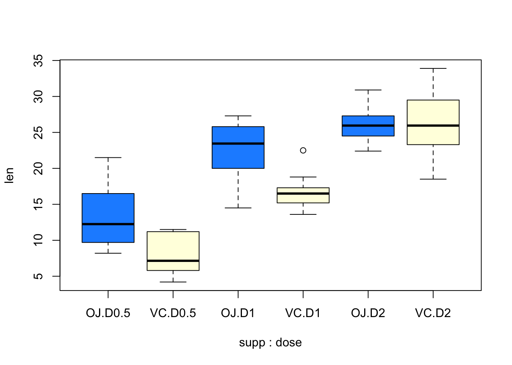
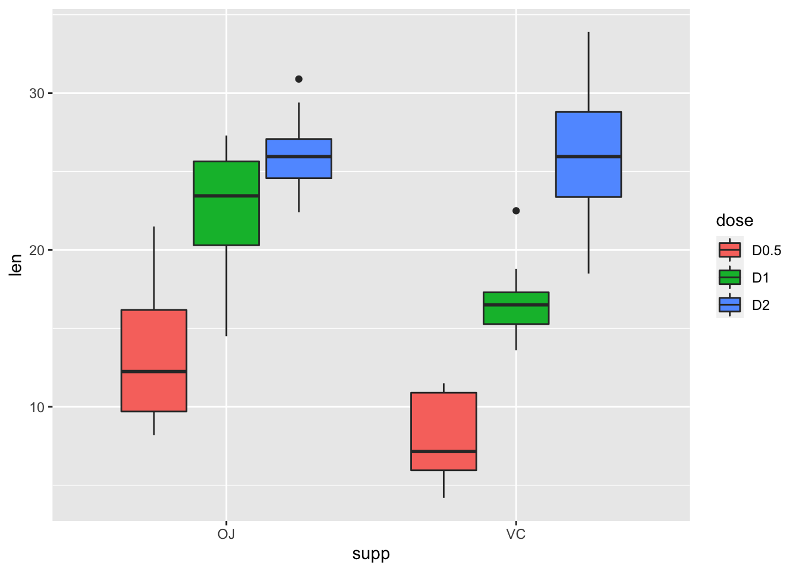
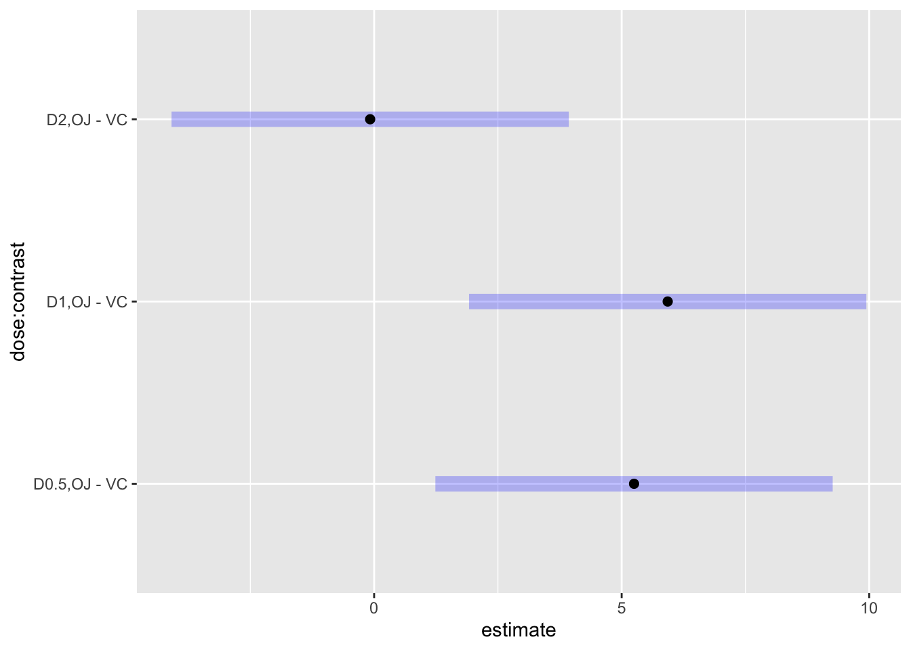
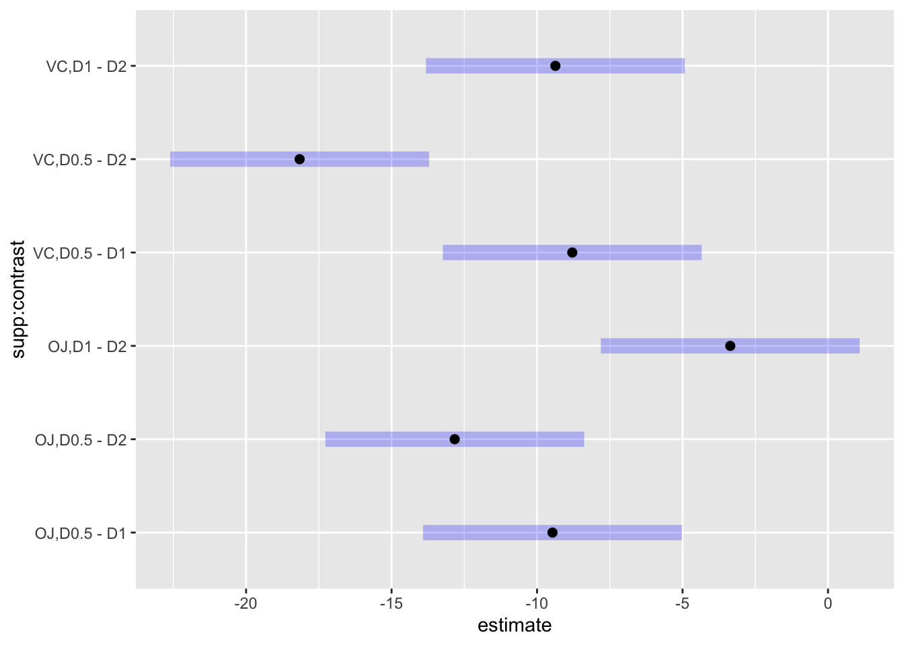
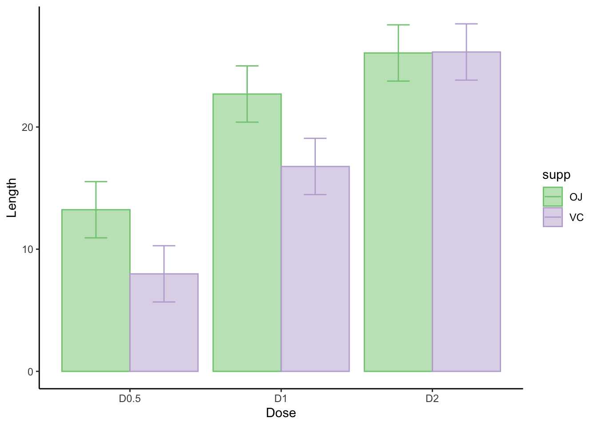
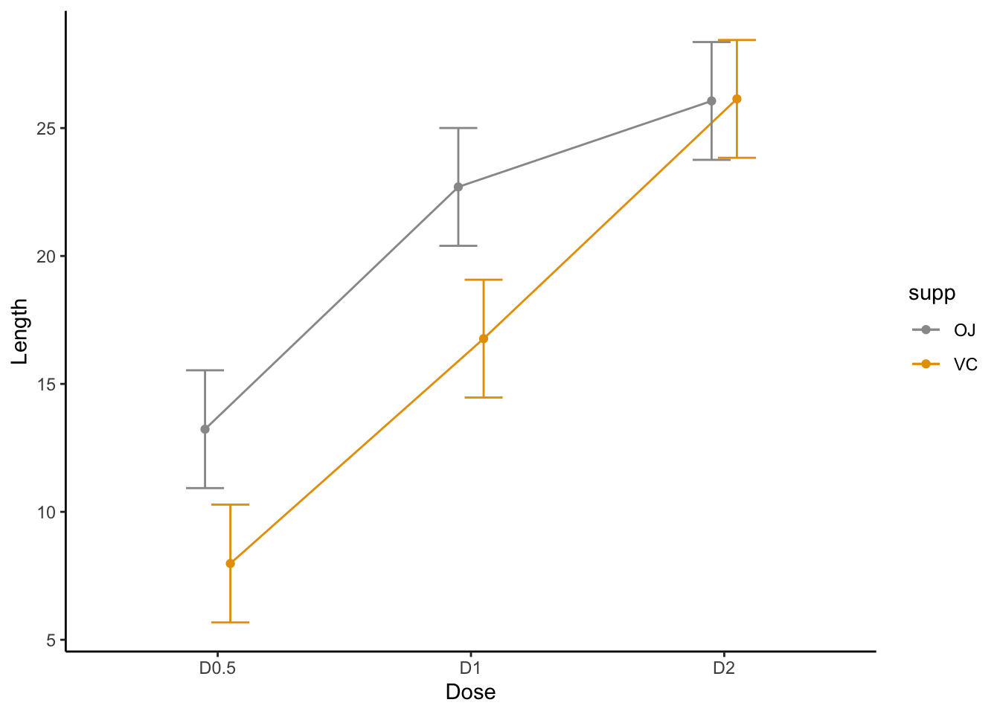

# load all libraries for this tutorial
library(car)
library(ggplot2)
library(afex)## Loading required package: lme4## Loading required package: Matrix## ************
## Welcome to afex. For support visit: http://afex.singmann.science/## - Functions for ANOVAs: aov_car(), aov_ez(), and aov_4()
## - Methods for calculating p-values with mixed(): 'S', 'KR', 'LRT', and 'PB'
## - 'afex_aov' and 'mixed' objects can be passed to emmeans() for follow-up tests
## - NEWS: emmeans() for ANOVA models now uses model = 'multivariate' as default.
## - Get and set global package options with: afex_options()
## - Set orthogonal sum-to-zero contrasts globally: set_sum_contrasts()
## - For example analyses see: browseVignettes("afex")
## ************##
## Attaching package: 'afex'## The following object is masked from 'package:lme4':
##
## lmerlibrary(effectsize)
library(psych)
library(apaTables)
library(jmv)##
## Attaching package: 'jmv'## The following objects are masked from 'package:psych':
##
## pca, reliabilitylibrary(emmeans)เราจะใช้การวิเคราะห์ความแปรปรวนแบบแฟกทอเรียลในกรณีที่มีปัจจัย (factor) ที่ต้องการศึกษาตั้งแต่สองปัจจัยขึ้นไป
การวิเคราะห์ความแปรปรวนสองทางใช้ในกรณีที่มีปัจจัยที่เป็นตัวแปรอิสระสองตัว ในตัวอย่างนี้เราจะใช้ชุดข้อมูล ToothGrowth ที่มีอยู่แล้วใน R
ชุดข้อมูลนี้มาจากการศึกษาความยาวของเซลล์ที่เกี่ยวข้องกับการเติบโตของฟันในหนูตะเภา ตัวแปรอิสระตัวแรกคือโดสของวิตามินซีที่ได้รับในแต่ละวัน (0.5, 1, และ 2 มิลลิกรัม/วัน) โดยมีตัวแปรอิสระตัวที่สองคือ แหล่งที่มาของวิตามิน ได้แก่ น้ำส้ม (OJ) หรือ กรดแอสคอร์บิกที่มีวิตามินซี (VC)
mydata <- ToothGrowth
mydata$id <- 1:nrow(mydata) #add id column
mydata## len supp dose id
## 1 4.2 VC 0.5 1
## 2 11.5 VC 0.5 2
## 3 7.3 VC 0.5 3
## 4 5.8 VC 0.5 4
## 5 6.4 VC 0.5 5
## 6 10.0 VC 0.5 6
## 7 11.2 VC 0.5 7
## 8 11.2 VC 0.5 8
## 9 5.2 VC 0.5 9
## 10 7.0 VC 0.5 10
## 11 16.5 VC 1.0 11
## 12 16.5 VC 1.0 12
## 13 15.2 VC 1.0 13
## 14 17.3 VC 1.0 14
## 15 22.5 VC 1.0 15
## 16 17.3 VC 1.0 16
## 17 13.6 VC 1.0 17
## 18 14.5 VC 1.0 18
## 19 18.8 VC 1.0 19
## 20 15.5 VC 1.0 20
## 21 23.6 VC 2.0 21
## 22 18.5 VC 2.0 22
## 23 33.9 VC 2.0 23
## 24 25.5 VC 2.0 24
## 25 26.4 VC 2.0 25
## 26 32.5 VC 2.0 26
## 27 26.7 VC 2.0 27
## 28 21.5 VC 2.0 28
## 29 23.3 VC 2.0 29
## 30 29.5 VC 2.0 30
## 31 15.2 OJ 0.5 31
## 32 21.5 OJ 0.5 32
## 33 17.6 OJ 0.5 33
## 34 9.7 OJ 0.5 34
## 35 14.5 OJ 0.5 35
## 36 10.0 OJ 0.5 36
## 37 8.2 OJ 0.5 37
## 38 9.4 OJ 0.5 38
## 39 16.5 OJ 0.5 39
## 40 9.7 OJ 0.5 40
## 41 19.7 OJ 1.0 41
## 42 23.3 OJ 1.0 42
## 43 23.6 OJ 1.0 43
## 44 26.4 OJ 1.0 44
## 45 20.0 OJ 1.0 45
## 46 25.2 OJ 1.0 46
## 47 25.8 OJ 1.0 47
## 48 21.2 OJ 1.0 48
## 49 14.5 OJ 1.0 49
## 50 27.3 OJ 1.0 50
## 51 25.5 OJ 2.0 51
## 52 26.4 OJ 2.0 52
## 53 22.4 OJ 2.0 53
## 54 24.5 OJ 2.0 54
## 55 24.8 OJ 2.0 55
## 56 30.9 OJ 2.0 56
## 57 26.4 OJ 2.0 57
## 58 27.3 OJ 2.0 58
## 59 29.4 OJ 2.0 59
## 60 23.0 OJ 2.0 60ใช้คำสั่ง str() เพื่อตรวจสอบว่าโครงสร้างของข้อมูลเป็นไปตามที่ต้องการหรือไม่
ในกรณีนี้พบว่าตัวแปร dose นั้นถูกบันทึกเป็น num จึงต้องแปลงให้เป็น factor ให้เรียบร้อย กำหนด levels และ labels ให้ตรงกับที่ต้องการจะให้ปรากฎเวลาวิเคราะห์ข้อมูล
str(mydata)## 'data.frame': 60 obs. of 4 variables:
## $ len : num 4.2 11.5 7.3 5.8 6.4 10 11.2 11.2 5.2 7 ...
## $ supp: Factor w/ 2 levels "OJ","VC": 2 2 2 2 2 2 2 2 2 2 ...
## $ dose: num 0.5 0.5 0.5 0.5 0.5 0.5 0.5 0.5 0.5 0.5 ...
## $ id : int 1 2 3 4 5 6 7 8 9 10 ...mydata$dose <- factor(mydata$dose, levels = c(0.5, 1, 2), labels = c("D0.5", "D1", "D2"))
str(mydata)## 'data.frame': 60 obs. of 4 variables:
## $ len : num 4.2 11.5 7.3 5.8 6.4 10 11.2 11.2 5.2 7 ...
## $ supp: Factor w/ 2 levels "OJ","VC": 2 2 2 2 2 2 2 2 2 2 ...
## $ dose: Factor w/ 3 levels "D0.5","D1","D2": 1 1 1 1 1 1 1 1 1 1 ...
## $ id : int 1 2 3 4 5 6 7 8 9 10 ...ลำดับต่อไปคือการตรวจสอบค่าสถิติพื้นฐาน เช่น ค่าเฉลี่ย ส่วนเบี่ยงเบนมาตรฐาน จำนวนกลุ่มตัวอย่าง เป็นต้น
# checking sample size
table(mydata$supp, mydata$dose)##
## D0.5 D1 D2
## OJ 10 10 10
## VC 10 10 10ในกรณีนี้เรามีกลุ่มตัวอย่างเท่ากันในทุกช่อง (balanced design)
สำหรับสถิติเชิงพรรณาให้ใช้คำสั่ง describeBy() จาก package psych เพื่อตรวจสอบค่าต่าง ๆ เช่น ค่าสูงสุดต่ำสุด ว่าข้อมูลมีจุดผิดพลาดอะไรหรือไม่
ส่วนคำสั่ง apa.2way.table() เหมาะสำหรับใช้สร้างตารางเป็นไฟล์ Word เพื่อนำไปใช้เขียนรายงาน
describeBy(len ~ supp * dose, data = mydata) # This will give us detailed descriptive stats by group##
## Descriptive statistics by group
## supp: OJ
## dose: D0.5
## vars n mean sd median trimmed mad min max range skew kurtosis se
## X1 1 10 13.23 4.46 12.25 12.82 4.3 8.2 21.5 13.3 0.44 -1.37 1.41
## ---------------------------------------------------------------------------------------------
## supp: VC
## dose: D0.5
## vars n mean sd median trimmed mad min max range skew kurtosis se
## X1 1 10 7.98 2.75 7.15 8.01 3.56 4.2 11.5 7.3 0.13 -1.81 0.87
## ---------------------------------------------------------------------------------------------
## supp: OJ
## dose: D1
## vars n mean sd median trimmed mad min max range skew kurtosis se
## X1 1 10 22.7 3.91 23.45 23.15 3.93 14.5 27.3 12.8 -0.68 -0.68 1.24
## ---------------------------------------------------------------------------------------------
## supp: VC
## dose: D1
## vars n mean sd median trimmed mad min max range skew kurtosis se
## X1 1 10 16.77 2.52 16.5 16.45 1.7 13.6 22.5 8.9 0.93 0.08 0.8
## ---------------------------------------------------------------------------------------------
## supp: OJ
## dose: D2
## vars n mean sd median trimmed mad min max range skew kurtosis se
## X1 1 10 26.06 2.66 25.95 25.91 2.08 22.4 30.9 8.5 0.37 -1.09 0.84
## ---------------------------------------------------------------------------------------------
## supp: VC
## dose: D2
## vars n mean sd median trimmed mad min max range skew kurtosis se
## X1 1 10 26.14 4.8 25.95 26.12 4.6 18.5 33.9 15.4 0.16 -1.23 1.52apa.2way.table(dv = len, iv1 = supp, iv2 = dose , data = mydata, filename = "twowaydesciptive.doc")##
##
## Means and standard deviations for len as a function of a 2(supp) X 3(dose) design
##
## dose
## D0.5 D1 D2
## supp M SD M SD M SD
## OJ 13.23 4.46 22.70 3.91 26.06 2.66
## VC 7.98 2.75 16.77 2.52 26.14 4.80
##
## Note. M and SD represent mean and standard deviation, respectively.เพื่อให้เห็นภาพของข้อมูลโดยรวม การใช้วาดกราฟจะช่วยได้เป็นอย่างดี ในจุดนี้เราไม่ต้องการภาพที่สวยงานแค่ใช้พิจารณาข้อมูลได้ก็เพียงพอ
เราสามาถใช้ boxplot() ใน Base R หรือใช้ ggplot() ก็ได้
boxplot(len ~ supp * dose, data = mydata, col = c("dodgerblue", "lightyellow"))
ggplot(mydata, aes(x = supp, y = len, fill = dose)) +
geom_boxplot()
ในขั้นตอนการวิเคราะห์ความแปรปรวนสองทางนี้ เราต้องระมัดระวังว่าจะเลือกใช้คำสั่งใด เพราะแต่ละคำสั่งจะใช้วิธีคำนวณ SS ละคนประเภทกัน
ในตัวอย่างนี้ ข้อมูลเป็นแบบ balanced ผลของ SS Type I, II, และ III จะเท่ากัน แต่หากกลุ่มตัวอย่างไม่เท่ากัน การเลือกใช้ SS Type ที่แตกต่างกันจะทำให้ได้ผลที่ไม่เหมือนกันไปด้วย
สำหรับการวิเคราะห์ที่มีตัวแปรต้นตั้งแต่สองตัวขึ้นไป ควรหลีกเลี่ยงการสร้างโมเดล aov ใน R เพราะเป็นวิธีที่ใช้ Type I SS ซึ่งมักจะไม่เหมาะสมในการทดสอบสมมติฐานใน unbalanced design
tooth.aov <- aov(len ~ supp * dose, data = mydata)
summary(tooth.aov)## Df Sum Sq Mean Sq F value Pr(>F)
## supp 1 205.4 205.4 15.572 0.000231 ***
## dose 2 2426.4 1213.2 92.000 < 2e-16 ***
## supp:dose 2 108.3 54.2 4.107 0.021860 *
## Residuals 54 712.1 13.2
## ---
## Signif. codes: 0 '***' 0.001 '**' 0.01 '*' 0.05 '.' 0.1 ' ' 1หากต้องการคำนวณโดยใช้ Type III SS เรามีทางเลือกหลัก ๆ 3 วิธี
car packageใช้คำสั่ง Anova() ใน car (สังเกตว่าใช้ A ตัวพิมพ์ใหญ่)
เพื่อจะใช้งานคำสั่งนี้ เราจะต้องสร้างโมเดลเชิงเส้นตรง (linear model) ด้วยคำสั่ง lm()
ในส่วนโมเดล เราจะเขียน y ~ x1 * x2 หรือ y ~ x1 + x2 + x1:x2 ก็ได้ (ได้ผลเหมือนกัน)
นอกจากนี้ให้กำหนดตัวเลือก contrast เป็น contr.sum สำหรับตัวแปรอิสระทั้งสองตัว เมื่อทำตามนี้แล้วจะได้โมเดลที่ให้ผลเท่ากับการวิเคราะห์ ANOVA (ANOVA เป็นกรณีเฉพาะแบบหนึ่งของ linear model)
สำหรับคำสั่ง Anova() นั้นจะมี input เป็นโมเดล lm ที่เราสร้างขึ้น และมี option type ให้กำหนดชนิดของ SS
เราสามารถเรียกคำสั่ง Anova() เพื่อดูผลได้เลย หรือ save เป็นตัวแปรเพื่อใช้งานในอนาคตต่อไปก็ได้
tooth.lm <- lm(len ~ supp + dose + supp:dose, data = mydata,
contrast = list(supp = contr.sum, dose = contr.sum)) # same as aov
# Type I
anova(tooth.lm) # Base R function. Notice the small a.## Analysis of Variance Table
##
## Response: len
## Df Sum Sq Mean Sq F value Pr(>F)
## supp 1 205.35 205.35 15.572 0.0002312 ***
## dose 2 2426.43 1213.22 92.000 < 2.2e-16 ***
## supp:dose 2 108.32 54.16 4.107 0.0218603 *
## Residuals 54 712.11 13.19
## ---
## Signif. codes: 0 '***' 0.001 '**' 0.01 '*' 0.05 '.' 0.1 ' ' 1# Type III
tooth.Anova <- Anova(tooth.lm, type = 3)
tooth.Anova # car function. Capital A. ## Anova Table (Type III tests)
##
## Response: len
## Sum Sq Df F value Pr(>F)
## (Intercept) 21236.5 1 1610.393 < 2.2e-16 ***
## supp 205.4 1 15.572 0.0002312 ***
## dose 2426.4 2 92.000 < 2.2e-16 ***
## supp:dose 108.3 2 4.107 0.0218603 *
## Residuals 712.1 54
## ---
## Signif. codes: 0 '***' 0.001 '**' 0.01 '*' 0.05 '.' 0.1 ' ' 1afex packageอีกทางเลือกหนึ่งคือใช้ afex (Analysis of Factorial Experiments) ซึ่งออกแบบมาเพื่อการวิเคราะห์ ANOVA ที่ซับซ้อนโดยเฉพาะ ในระดับโปรแกรมคำสั่ง afex::aov_car() จะดึงคำสั่งจากชุดคำสั่งใน car มาใช้งาน แต่คำสั่งใน afex อาจดูใช้งานง่ายกว่า
ในคำสั่ง aov_car() จะต้องมีการเขียนโมเดล โดยโมเดลจะอยู่ในรูป y ~ x1 * x2 + Error() จุดที่แตกต่างจากเดิมคือต้องมีการระบุ Error() หรือความคลาดเคลื่อนของโมเดล ในกรณีนี้เป็นการออกแบบระหว่างกลุ่ม ความคลาดเคลื่อนจึงอยู่ที่กลุ่มตัวอย่าง ซึ่งเราระบุตัวได้ด้วยตัวแปร id (ขึ้นไปดูวิธีสร้างด้านบน)
tooth.afex <- aov_car(len ~ supp * dose + Error(id), data = mydata)## Contrasts set to contr.sum for the following variables: supp, dosesummary(tooth.afex)## Anova Table (Type 3 tests)
##
## Response: len
## num Df den Df MSE F ges Pr(>F)
## supp 1 54 13.187 15.572 0.22383 0.0002312 ***
## dose 2 54 13.187 92.000 0.77311 < 2.2e-16 ***
## supp:dose 2 54 13.187 4.107 0.13203 0.0218603 *
## ---
## Signif. codes: 0 '***' 0.001 '**' 0.01 '*' 0.05 '.' 0.1 ' ' 1Anova(tooth.afex$lm, type = 3)## Anova Table (Type III tests)
##
## Response: dv
## Sum Sq Df F value Pr(>F)
## (Intercept) 21236.5 1 1610.393 < 2.2e-16 ***
## supp 205.4 1 15.572 0.0002312 ***
## dose 2426.4 2 92.000 < 2.2e-16 ***
## supp:dose 108.3 2 4.107 0.0218603 *
## Residuals 712.1 54
## ---
## Signif. codes: 0 '***' 0.001 '**' 0.01 '*' 0.05 '.' 0.1 ' ' 1ข้อความเตือนแสดงให้เราเห็นว่า โปรแกรมได้ปรับ option contrast อัตโนมัติให้เป็น contr.sum
ตาราง ANOVA ของคำสั่ง aov_car() จะไม่เหมือนกับตาราง ANOVA ทั่วไปที่จะแสดง SS หรือ MS ให้ หากต้องการได้ตารางที่มีค่า SS สามารถใช้คำสั่ง car::Anova() เรียกวิเคราะห์โมเดล lm ที่ซ่อนอยู่ใน object ของ aov_car ได้
jmvคำสั่ง ANOVA() ใน jmv จะวิเคราะห์ด้วย Type III SS เป็นค่าตั้งต้น ลักษณะการใช้งานของคำสั่งใน jmv จะแตกต่างจากคำสั่ง R ทั่วไป ที่จะให้ผู้ใช้เรียกคำสั่งตามที่ต้องการทีละตัว แต่คำสั่งใน jmv จะมีลักษณะเป็นคำสั่งเดียว (เช่น ANOVA) แล้วมี options ให้เลือกจำนวนมาก (เช่น คำนวณ effect size ตัวไหน ต้องการทำ post-hoc หรือไม่ จะดู estimated marginal means ไหม จะ plot estimated marginal means ไหม จะแสดง 95% CI หรือไม่ ฯลฯ) สำหรับ options ในคำสั่ง สามารถดูได้ที่ ?ANOVA
ANOVA(formula = len ~ supp * dose, data = mydata, effectSize = list("partEta", "omega"))##
## ANOVA
##
## ANOVA - len
## ─────────────────────────────────────────────────────────────────────────────────────────────────────────
## Sum of Squares df Mean Square F p η²p ω²
## ─────────────────────────────────────────────────────────────────────────────────────────────────────────
## supp 205.3500 1 205.35000 15.571979 0.0002312 0.2238254 0.0554519
## dose 2426.4343 2 1213.21717 91.999965 < .0000001 0.7731092 0.6925788
## supp:dose 108.3190 2 54.15950 4.106991 0.0218603 0.1320279 0.0236466
## Residuals 712.1060 54 13.18715
## ─────────────────────────────────────────────────────────────────────────────────────────────────────────ในการคำนวณขนาดอิทธิพล สามารถใช้คำสั่งจาก effectsize ได้ เช่น ต้องการ eta_squared() หรือ omega_squared หรือ cohens_f
เนื่องจากการวิเคราะห์ที่เราใช้เป็น Type III SS เราจึงต้องใช้ object ที่เป็น Type III ในคำสั่งของ effectsize ซึ่งสามารถใช้ได้ทั้งโมเดลจาก afex::aov_car() หรือ output ที่ save จาก car::Anova
eta_squared(tooth.Anova)## Type 3 ANOVAs only give sensible and informative results when covariates are mean-centered and factors are coded with
## orthogonal contrasts (such as those produced by 'contr.sum', 'contr.poly', or 'contr.helmert', but *not* by the default
## 'contr.treatment').## # Effect Size for ANOVA (Type III)
##
## Parameter | Eta2 (partial) | 90% CI
## -----------------------------------------
## supp | 0.22 | [0.08, 0.37]
## dose | 0.77 | [0.68, 0.83]
## supp:dose | 0.13 | [0.01, 0.27]eta_squared(tooth.afex) #same as above## Type 3 ANOVAs only give sensible and informative results when covariates are mean-centered and factors are coded with
## orthogonal contrasts (such as those produced by 'contr.sum', 'contr.poly', or 'contr.helmert', but *not* by the default
## 'contr.treatment').## # Effect Size for ANOVA (Type III)
##
## Parameter | Eta2 (partial) | 90% CI
## -----------------------------------------
## supp | 0.22 | [0.08, 0.37]
## dose | 0.77 | [0.68, 0.83]
## supp:dose | 0.13 | [0.01, 0.27]omega_squared(tooth.Anova)## Type 3 ANOVAs only give sensible and informative results when covariates are mean-centered and factors are coded with
## orthogonal contrasts (such as those produced by 'contr.sum', 'contr.poly', or 'contr.helmert', but *not* by the default
## 'contr.treatment').## # Effect Size for ANOVA (Type III)
##
## Parameter | Omega2 (partial) | 90% CI
## -------------------------------------------
## supp | 0.20 | [0.06, 0.35]
## dose | 0.75 | [0.65, 0.81]
## supp:dose | 0.09 | [0.00, 0.22]omega_squared(tooth.afex) #same as above## Type 3 ANOVAs only give sensible and informative results when covariates are mean-centered and factors are coded with
## orthogonal contrasts (such as those produced by 'contr.sum', 'contr.poly', or 'contr.helmert', but *not* by the default
## 'contr.treatment').## # Effect Size for ANOVA (Type III)
##
## Parameter | Omega2 (partial) | 90% CI
## -------------------------------------------
## supp | 0.20 | [0.06, 0.35]
## dose | 0.75 | [0.65, 0.81]
## supp:dose | 0.09 | [0.00, 0.22]cohens_f(tooth.Anova)## Type 3 ANOVAs only give sensible and informative results when covariates are mean-centered and factors are coded with
## orthogonal contrasts (such as those produced by 'contr.sum', 'contr.poly', or 'contr.helmert', but *not* by the default
## 'contr.treatment').## # Effect Size for ANOVA (Type III)
##
## Parameter | Cohen's f (partial) | 90% CI
## ----------------------------------------------
## supp | 0.54 | [0.30, 0.77]
## dose | 1.85 | [1.47, 2.20]
## supp:dose | 0.39 | [0.11, 0.60]cohens_f(tooth.afex) #same as above## Type 3 ANOVAs only give sensible and informative results when covariates are mean-centered and factors are coded with
## orthogonal contrasts (such as those produced by 'contr.sum', 'contr.poly', or 'contr.helmert', but *not* by the default
## 'contr.treatment').## # Effect Size for ANOVA (Type III)
##
## Parameter | Cohen's f (partial) | 90% CI
## ----------------------------------------------
## supp | 0.54 | [0.30, 0.77]
## dose | 1.85 | [1.47, 2.20]
## supp:dose | 0.39 | [0.11, 0.60]เนื่องจากเราพบว่าตัวแปร supp และ dose มีปฏิสัมพันธ์กัน เราจึงต้องสำรวจต่อในระดับอิทธิพลอย่างง่าย (simple effects)
ก่อนอื่นเราต้องสร้าง โมเดลค่าเฉลี่ยของแต่ละเงื่อนไขด้วย emmeans() โดยมี input เป็นโมเดลสถิติจากคำสั่ง lm() หรือ afex::aov_car และกำหนดโมเดลว่าเราต้องการดูค่าเฉลี่ยของตัวแปรใน เช่น ~ x1 * x2 คือ สร้างตารางค่าเฉลี่ยของทุกช่อง (ทุกระดับในตัวแปร 1 และ 2)
tooth.emm1 <- emmeans(tooth.lm, ~ supp * dose)
tooth.emm2 <- emmeans(tooth.afex, ~ supp * dose) #same as above
tooth.emm1## supp dose emmean SE df lower.CL upper.CL
## OJ D0.5 13.23 1.15 54 10.93 15.5
## VC D0.5 7.98 1.15 54 5.68 10.3
## OJ D1 22.70 1.15 54 20.40 25.0
## VC D1 16.77 1.15 54 14.47 19.1
## OJ D2 26.06 1.15 54 23.76 28.4
## VC D2 26.14 1.15 54 23.84 28.4
##
## Confidence level used: 0.95tooth.emm2 #same as above## supp dose emmean SE df lower.CL upper.CL
## OJ D0.5 13.23 1.15 54 10.93 15.5
## VC D0.5 7.98 1.15 54 5.68 10.3
## OJ D1 22.70 1.15 54 20.40 25.0
## VC D1 16.77 1.15 54 14.47 19.1
## OJ D2 26.06 1.15 54 23.76 28.4
## VC D2 26.14 1.15 54 23.84 28.4
##
## Confidence level used: 0.95หากผู้วิจัยต้องการศึกษาว่า แหล่งของวิตามิน supp แตกต่างหรือไม่ แยกตามระดับ dose
เราสามารถใช้คำสั่ง emmeans::contrast() โดยให้ input เป็นโมเดลตารางค่าเฉลี่ย (จากคำสั่ง emmeans ด้านบน) และเลือก method = "pairwise" คือให้เปรียบเทียบรายคู่ และ กำหนดให้การทดสอบอิทธิพลอย่างง่าย simple = "supp" ซึ่งเป็นตัวแปรที่ต้องการเปรียบเทียบ (หรือใช้คำสั่ง by = ตัวแปรที่ต้องการแยก ก็ได้)
suppBydose <- contrast(tooth.emm1, "pairwise", simple = "supp")
contrast(tooth.emm1, "pairwise", by = "dose") #same as above## dose = D0.5:
## contrast estimate SE df t.ratio p.value
## OJ - VC 5.25 1.62 54 3.233 0.0021
##
## dose = D1:
## contrast estimate SE df t.ratio p.value
## OJ - VC 5.93 1.62 54 3.651 0.0006
##
## dose = D2:
## contrast estimate SE df t.ratio p.value
## OJ - VC -0.08 1.62 54 -0.049 0.9609เนื่องจากการทดสอบ supp ในแต่ละเงื่อนไข dose จะทำให้มีการทดสอบทั้งสิ้น 3 คู่ เราจึงต้องปรับแก้ค่า p เพื่อป้องกัน \(\alpha_{fw}\) ดังนั้นเราจึงต้องรวมการทดสอบทั้ง 3 คู่ให้อยู่ใน family เดียวกันด้วย rbind() จากนั้นใช้คำสั่ง summary() เรียกดูค่าสถิติ โดยกำหนดให้ปรับแก้ adjust = "sidak"
fam_suppBydose<- rbind(suppBydose)
summary(fam_suppBydose, adjust = "sidak", infer = TRUE)## dose contrast estimate SE df lower.CL upper.CL t.ratio p.value
## D0.5 OJ - VC 5.25 1.62 54 1.25 9.25 3.233 0.0063
## D1 OJ - VC 5.93 1.62 54 1.93 9.93 3.651 0.0018
## D2 OJ - VC -0.08 1.62 54 -4.08 3.92 -0.049 0.9999
##
## Confidence level used: 0.95
## Conf-level adjustment: sidak method for 3 estimates
## P value adjustment: sidak method for 3 testsplot(fam_suppBydose, adjust = "sidak") 
หากต้องการเปรียบเทียบค่าเฉลี่ยของ dose โดยแบ่งตาม supp ก็สามารถทำได้โดยแก้ไข option simple = "dose" หรือ by = "supp"
doseBysupp <- contrast(tooth.emm1, "pairwise", simple = "dose")
fam_doseBysupp<- rbind(doseBysupp)
summary(fam_doseBysupp, adjust = "sidak", infer = TRUE)## supp contrast estimate SE df lower.CL upper.CL t.ratio p.value
## OJ D0.5 - D1 -9.47 1.62 54 -13.9 -5.03 -5.831 <.0001
## OJ D0.5 - D2 -12.83 1.62 54 -17.3 -8.39 -7.900 <.0001
## OJ D1 - D2 -3.36 1.62 54 -7.8 1.08 -2.069 0.2335
## VC D0.5 - D1 -8.79 1.62 54 -13.2 -4.35 -5.413 <.0001
## VC D0.5 - D2 -18.16 1.62 54 -22.6 -13.72 -11.182 <.0001
## VC D1 - D2 -9.37 1.62 54 -13.8 -4.93 -5.770 <.0001
##
## Confidence level used: 0.95
## Conf-level adjustment: sidak method for 6 estimates
## P value adjustment: sidak method for 6 testsplot(fam_doseBysupp, adjust = "sidak") 
ในกรณีที่ต้องการดู simple effects ทุกคู่ที่เป็นไปได้ ให้กำหนด simple = "each" โปรแกรมจะคำนวณ simple effects ในทุก ๆ รายคู่ที่เป็นไปได้ให้ เราควรเพิ่มคำสั่ง combine = TRUE เพื่อรวมการวิเคราะห์รายคู่ทั้งหมดอยู่ด้วยกัน แล้วปรับแก้พร้อมกันทีเดียวใน summary() ด้วยวิธีของ sidak
allsimple <- contrast(tooth.emm1, "pairwise", simple = "each", combine = TRUE)
summary(allsimple, adjust = "sidak", infer = TRUE)## dose supp contrast estimate SE df lower.CL upper.CL t.ratio p.value
## D0.5 . OJ - VC 5.25 1.62 54 0.572 9.93 3.233 0.0187
## D1 . OJ - VC 5.93 1.62 54 1.252 10.61 3.651 0.0053
## D2 . OJ - VC -0.08 1.62 54 -4.758 4.60 -0.049 1.0000
## . OJ D0.5 - D1 -9.47 1.62 54 -14.148 -4.79 -5.831 <.0001
## . OJ D0.5 - D2 -12.83 1.62 54 -17.508 -8.15 -7.900 <.0001
## . OJ D1 - D2 -3.36 1.62 54 -8.038 1.32 -2.069 0.3289
## . VC D0.5 - D1 -8.79 1.62 54 -13.468 -4.11 -5.413 <.0001
## . VC D0.5 - D2 -18.16 1.62 54 -22.838 -13.48 -11.182 <.0001
## . VC D1 - D2 -9.37 1.62 54 -14.048 -4.69 -5.770 <.0001
##
## Confidence level used: 0.95
## Conf-level adjustment: sidak method for 9 estimates
## P value adjustment: sidak method for 9 testsโดยปกติแล้วหากพบผลปฏิสัมพันธ์ ผู้วิจัยมักไม่มีความจำเป็นที่จะต้องวิเคราะห์รายคู่ในระดับ main effect (เนื่องจากวิเคราะห์ simple effect ไปแล้ว)
แต่ถ้าหากไม่พบปฏิสัมพันธ์ แต่พบอิทธิพลหลัก เราอาจวิเคราะห์ post-hoc ของอิทธิพลหลักได้ด้วยคำสั่งด้านล่างนี้
supp.emm <- emmeans(tooth.afex, ~ supp) # use only main effect of interest## NOTE: Results may be misleading due to involvement in interactionssupp.emm## supp emmean SE df lower.CL upper.CL
## OJ 20.7 0.663 54 19.3 22.0
## VC 17.0 0.663 54 15.6 18.3
##
## Results are averaged over the levels of: dose
## Confidence level used: 0.95contrast(supp.emm, "pairwise", infer = TRUE) ## contrast estimate SE df lower.CL upper.CL t.ratio p.value
## OJ - VC 3.7 0.938 54 1.82 5.58 3.946 0.0002
##
## Results are averaged over the levels of: dose
## Confidence level used: 0.95pairs(supp.emm, infer = TRUE) #same as above## contrast estimate SE df lower.CL upper.CL t.ratio p.value
## OJ - VC 3.7 0.938 54 1.82 5.58 3.946 0.0002
##
## Results are averaged over the levels of: dose
## Confidence level used: 0.95dose.emm <- emmeans(tooth.afex, ~ dose) # main effect of dose## NOTE: Results may be misleading due to involvement in interactionspairs(dose.emm, infer = TRUE) #for pairwise, default adjust option is "tukey"## contrast estimate SE df lower.CL upper.CL t.ratio p.value
## D0.5 - D1 -9.13 1.15 54 -11.90 -6.36 -7.951 <.0001
## D0.5 - D2 -15.49 1.15 54 -18.26 -12.73 -13.493 <.0001
## D1 - D2 -6.37 1.15 54 -9.13 -3.60 -5.543 <.0001
##
## Results are averaged over the levels of: supp
## Confidence level used: 0.95
## Conf-level adjustment: tukey method for comparing a family of 3 estimates
## P value adjustment: tukey method for comparing a family of 3 estimatesกราฟิกใน R อาจจะใช้เวลาเรียนรู้นานกว่าโปรแกรมอื่น ๆ แต่เมื่อใช้งานเป็นแล้วจะสามารถสร้างกราฟที่สวยงามได้ตามที่ต้องการในเวลาที่รวดเร็ว
เริ่มแรกให้เราสร้าง dataframe ที่มีค่าเฉลี่ยของแต่ละเงื่อนไขเพื่อเอาไปสร้างกราฟ โดย save ผลจาก summary() ของตัวโมเดลตารางค่าเฉลี่ย (จาก emmeans)
จากนั้นนำไปใส่ในคำสั่ง ggplot() แล้วกำหนด aestheic aes() ให้
x เป็นตัวแปรอิสระตัวที่ 1
y เป็นตัวแปรตาม
color กำหนดให้ใช้กลุ่มสีแทนตัวแปรอิสระตัวที่ 2
จากนั้นเพิ่ม geometry ชนิด column geom_col กำหนด aes(fill =) ตัวแปรอิสระตัวที่ 2 (เพื่อให้เติมสีใน column ตามตัวแปร) ส่วน option alpha ใช้กำหนดความโปร่งแสง (transparency) และ option position = position_dodge(.9) กำหนดไว้ให้คอลัมน์วางอยู่ข้างกัน (หากไม่กำหนดคอลัมน์จะทับกัน)
geom_errorbar() ใช้สร้างขีดบอกความคลาดเคลื่อน (ในโมเดลตารางค่าเฉลี่ยมี 95% CI อยู่) ให้กำหนด ymin เป็นตัวแปรที่มีค่าขอบล่างของขีด และ xmin เป็นค่าขอบบนของขีด (เราสามารถเลือกค่า error bar ได้ตามต้องการ เช่น นักวิจัยบางคนใช้ค่า SE แทนค่า 95% CI) ส่วน option width เป็นตัวบอกขนาดของขีด สำหรับ position เราใช้ค่าเดียวกับใน geom_col เพื่อให้ error bar กับ column เรียงตรงกัน
xlab คือ ชื่อของแกน X ylab คือชื่อบนแกน Y ส่วน theme_classic มีลักษณะค่อนข้างใกล้เคียง APA (ผู้ใช้งานระดับสูงมักนิยมสร้าง theme ใหม่ของตัวเองไว้ใช้งาน)
สำหรับสอง option สุดท้าย คือ สีสำหรับ color (สีเส้นขอบ) และ fill (สีช่องในคอลัมน์) สามารถดูชุดสีได้ด้วยคำสั่ง RColorBrewer::display.brewer.all()
emm.summary <- summary(tooth.emm1)
emm.summary## supp dose emmean SE df lower.CL upper.CL
## OJ D0.5 13.23 1.15 54 10.93 15.5
## VC D0.5 7.98 1.15 54 5.68 10.3
## OJ D1 22.70 1.15 54 20.40 25.0
## VC D1 16.77 1.15 54 14.47 19.1
## OJ D2 26.06 1.15 54 23.76 28.4
## VC D2 26.14 1.15 54 23.84 28.4
##
## Confidence level used: 0.95ggplot(emm.summary, aes(x = dose, y = emmean, color = supp)) +
geom_col(aes(fill = supp), alpha = .5, position = position_dodge(.9)) +
geom_errorbar(aes(ymin = lower.CL, ymax = upper.CL), width = .3, position = position_dodge(.9)) +
xlab("Dose") +
ylab("Length") +
theme_classic() +
scale_color_brewer(palette="Accent") +
scale_fill_brewer(palette="Accent")
emm.summary <- summary(tooth.emm1)
emm.summary## supp dose emmean SE df lower.CL upper.CL
## OJ D0.5 13.23 1.15 54 10.93 15.5
## VC D0.5 7.98 1.15 54 5.68 10.3
## OJ D1 22.70 1.15 54 20.40 25.0
## VC D1 16.77 1.15 54 14.47 19.1
## OJ D2 26.06 1.15 54 23.76 28.4
## VC D2 26.14 1.15 54 23.84 28.4
##
## Confidence level used: 0.95ggplot(emm.summary, aes(x = dose, y = emmean, color = supp)) +
geom_point(position = position_dodge(.2)) +
geom_line(aes(group = supp), position = position_dodge(.2)) +
geom_errorbar(aes(ymin = lower.CL, ymax = upper.CL), width = .3, position = position_dodge(.2)) +
xlab("Dose") +
ylab("Length") +
theme_classic() +
scale_color_manual(values=c("#999999", "#E69F00"))